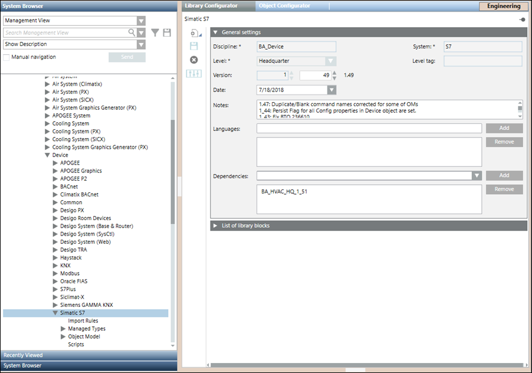
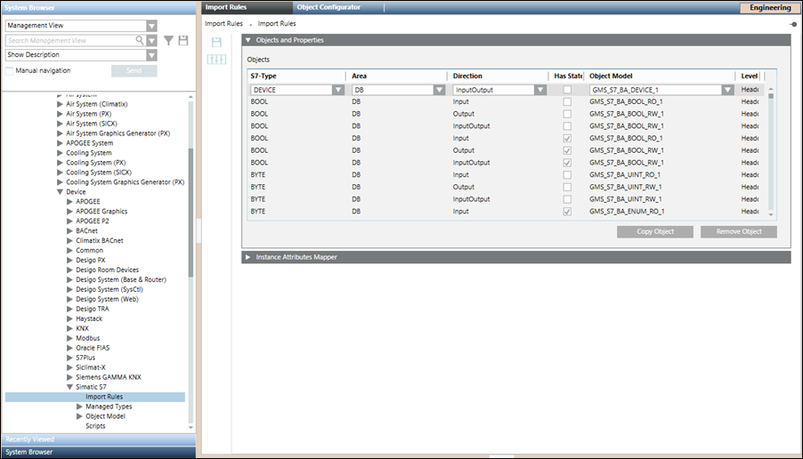
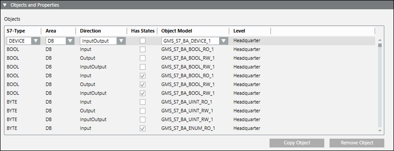
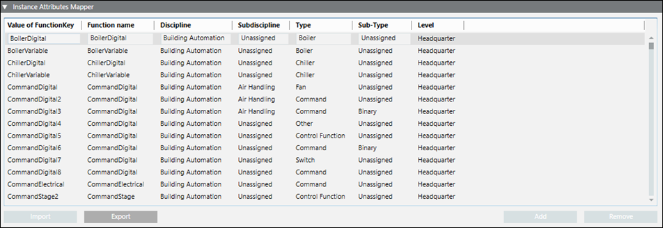
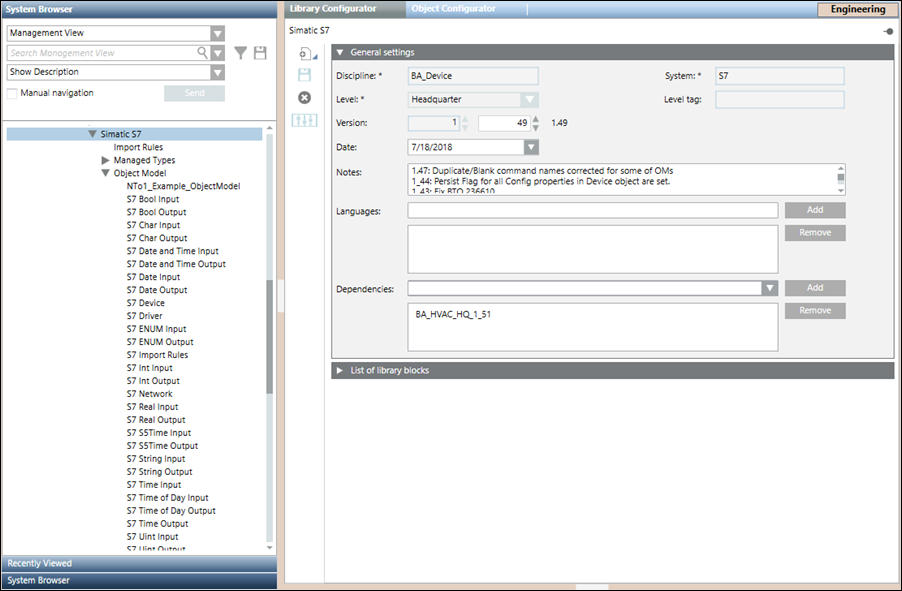

S7 Librarian Configuration Workspace
The Simatic S7 library contains the default set of data type definitions and related object models supported by the current version of the system.

Only S7 Data Types defined in the Simatic S7 Object Model library can be used to import S7 configuration CSV data.
Simatic S7 Supported DataTypes
S7 Data Type | Bit Length |
BOOL | 1 |
CHAR | 8 |
BYTE | 8 |
WORD | 16 |
DWORD | 32 |
INT | 16 |
DINT | 32 |
REAL | 32 |
S5TIME | 16 |
TIME | 32 |
TIME OF DAY | 32 |
DATE | 16 |
DATE AND TIME | 64 |
STRING | X |
S7Timer | 16 |
S7Counter | 16 |
Simatic S7 Datatypes Mapping
Simatic S7 | Management Station | |||||||||
S7 Data Type | Valid Display Format | Bit Length | Memory | S7 Data Type | ||||||
DB Data | M Flag | I Input | PI Periphery Input | O Output | PO Periphery Output | |||||
S7 Types | ||||||||||
BOOL | X | X | X |
| X |
| 1 | BIT | GMS_S7_BA_BOOL_1 | |
CHAR | X | X |
|
|
|
| 8 | BYTE | GMS_S7_BA_CHAR_1 | |
BYTE | X | X | X | X | X | X | 8 | BYTE | GMS_S7_BA_UINT_1 | |
WORD | X | X | X | X | X | X | 16 | WORD | ||
DWORD | X | X | X | X | X | X | 32 | DWORD | ||
INT | X | X | X | X | X | X | 16 | WORD | GMS_S7_BA_INT_1 | |
DINT | X | X | X | X | X | X | 32 | DWORD | ||
REAL | X | X | X | X | X | X | 32 | DWORD | GMS_S7_BA_REAL_1 | |
S5TIME | X | X |
|
|
|
| 16 | WORD | GMS_S7_BA_S5TIME_1 | |
TIME | X | X |
|
|
|
| 32 | DWORD | GMS_S7_BA_TIME_1 | |
TIME OF DAY | X | X |
|
|
|
| 32 | DWORD | GMS_S7_BA_TIME_OF_DAY_1 | |
DATE | X | X |
|
|
|
| 16 | WORD | GMS_S7_BA_DATE_1 | |
DATE AND TIME | X |
|
|
|
|
| 64 | - | GMS_S7_BA_DATE_ | |
STRING | X |
|
|
|
|
| x | - | GMS_S7_BA_STRING_1 | |
S7 Timer & Counter | ||||||||||
S7Timer |
|
|
|
|
|
| 16 | CPU | GMS_S7_BA_S7TIMER_1 | |
S7Counter |
|
|
|
|
|
| 16 | CPU | GMS_S7_BA_ | |
Import Rules
Import Rules provide the framework of rules for importing S7 objects into the management station. They allow you to configure the rules for importing the object definitions for the objects of a particular S7 family. You can configure the import rules from the Import Rules folder in the S7library. Before proceeding with the configuration, you must ensure that the S7 library is customized to the headquarter level as the importer reads and sets the rules from the headquarter level only.
Each Import Rules library element contains the rules for a specific product family (such as S7 and so on).
Using Import Rules, you can define the objects and properties for the import rules using the Objects and Properties expander and define instances for the attributes mapper. You can create another object with Copy Object and delete an object with Remove Object. When you save import rules, they are automatically activated.
Standard Import Rules
You can configure the rules for importing the object definitions for the objects of a particular S7 family and the system data type functions associated with those objects from the Import Rules tab. You can access this tab from the Management View by navigating to Project > System Settings > Libraries > L1-Headquarter > Global > S7 > Import Rules.
Each Import Rules library element contains the rules for a specific product family (such as S7 and so on).
Using Import Rules, you can define the objects and properties for the import rules using the Objects and Properties expander. You can create another object with Copy Object and delete an object with Remove Object.

Import Rules Toolbar | ||
Icon | Name | Description |
| Save | Save any changes. |

NOTICE

Modifying the Import Rules
Modifying the Import Rules can seriously affect the system's behavior and must always be done by a qualified system librarian.
Objects and Properties Expander for Standard Import Rules
The Objects and Properties expander allows you to set the standard Import Rules.
These rules are responsible for mapping the system defined object models to the S7 data types. They also define the Function Codes applicable to the particular data type and assign the direction of communication for a field point of an object model.
For example, consider the first row in the following screenshot.

Suppose, in the CSV, you specify BOOL as DataType, DB as Area , Input (I) as the Direction and assign a textgroup in StateText column, then while creating the instance, the Importer will create an instance of GMS_S7_BA_BOOL_RO_1 and assign Bool as TransformationType in the address configuration.
Objects and Properties Expander Fields | |
| Description |
S7-Type | Displays the S7 elementary types (objects) contained in the S7 CSV file. |
Area | Enter the S7 data type area. |
Direction | Displays the directions of the object, Input, Output, or InputOutput. |
Has States | Indicates whether or not the object has an associated StateText. |
Object Model | For each S7 object type, you can select or edit a specific object model. |
Level | Displays the Headquarter, Country, Region, or Project. |
Copy Object | Copy the selected object to the table. |
Remove Object | Remove the selected object from the table. |
You can change the configuration of existing objects, create new entries, or removed unwanted object entries.

NOTE:
The customization does not impact the standard import rules since the import rules are not copied to a higher priority level. The Importer reads and sets the rules from the headquarter level only.
S7Type | Object Importer Type | PVSSType (Assignment after import) | GMSType (Engineering) |
|---|---|---|---|
BOOL | uint | PvssUint | GmsEnum |
BYTE | uint | PvssUint | GmsUint (to assign a unit text to the property) GmsEnum (to assign a state text to the property) |
CHAR | string | PvssString | PvssString |
DATE | time | PvssTime | PvssTime |
DATE AND TIME | time | PvssTime | PvssTime |
DINT | int | PvssInt | GmsInt |
DWORD | uint | PvssUint | GmsUint (to assign a unit text to the property) GmsEnum (to assign a state text to the property) |
INT | int | PvssInt | GmsInt |
REAL | float | PvssFloat | GmsReal |
S5TIME | uint | PvssUint | GmsDuration |
S7COUNTER | uint | PvssUint | GmsUint |
S7TIMER | uint | PvssUint | GmsDuration |
STRING | string | PvssString | PvssString |
TIME | int | PvssInt | GmsInt |
TIME OF DAY | uint | PvssUint | GmsDuration |
WORD | uint | PvssUint | GmsUint (to assign a unit text to the property) GmsEnum (to assign a state text to the property) |
Instance Attributes Mapper Expander
The InstanceAttributesMapper expander allows you to specify the S7 function attribute, and the related instance attributes to which you also assign discipline, subdiscipline, type and subtype.
The value of the function attribute you define is used as a key for the data in the table which contains all the previously defined associations.

| Description |
Value of FunctionKey | Enter the value of the function that will identify a specific type of instance. |
Function name | Specify the name of the function that will be associated with the instances of this type. |
Discipline1) | Select the discipline that will be associated with the instances of this type. |
Sub-discipline1) | Select the subdiscipline that will be associated with the instances of this type. |
Type1) | Select the type that will be associated with the instances of this type |
Sub-type1) | Select the subtype that will be associated with the instances of this type. |
Level | Displays the Headquarter, Country, Region, or Project |
Allows you to export the configuration data contained in the table to a CSV file. | |
|
|
|
|
|
|
1) If you choose Unassigned, for Discipline, Subdiscipline, Type, or Sub-type, all of these fields will assume the value of the original Object Model defined for the object.
FunctionKey | FunctionName | Type | Subtype | Discipline | Subdiscipline | Level |
BoilerDigital | BoilerDigital | 400 | 0 | 50 | 0 |
|
BoilerVariable | BoilerVariable | 400 | 0 | 50 | 0 |
|
ChillerDigital | ChillerDigital | 900 | 0 | 50 | 0 |
|
Object Models
The S7 Data Point Types (DPTs) and the standard object models are imported under the Object Model library at the following location in the Engineering mode, Management View > System Settings > Libraries > BA HQ > Devices > […] > Object Model.

S7 Data Types
Following are the datatypes from the S7 Object Model Library.
S7 Data Type | Range | |
Min | Max | |
BOOL | 0 (FALSE) | 1 (TRUE) |
CHAR | Not Applicable | Not Applicable |
BYTE | 0 | 255 (16xFF) |
WORD | 0 | 65535 (16xFFFF) |
DWORD | 0 | 4294967295 (16xFFFFFFFF) |
INT | -32768 | 32767 |
DINT | -2147483648 | 2147483647 |
REAL | -3.402823e+38 | 3.402823e+38 |
S5TIME | 0H_0M_0S_10MS (No _) | 2H_46M_30S_0MS (No _) |
TIME | -24D_20H_31M_23S_648MS (No _) | 24D_20H_31M_23S_647MS (No _) |
TIME OF DAY | 0:0:0.0 | 23:59:59.999 |
DATE | Not Applicable | Not Applicable |
DATE AND TIME | Not Applicable | Not Applicable |
STRING | Not Applicable | Not Applicable |
NOTE 1:
If multiple alarm configurations are listed in one field, the delimiter is $!
NOTE 2:
Hysteresis cannot be applied to alarm types GE (>=) and LE (<=) because it interferes with their correct functioning.